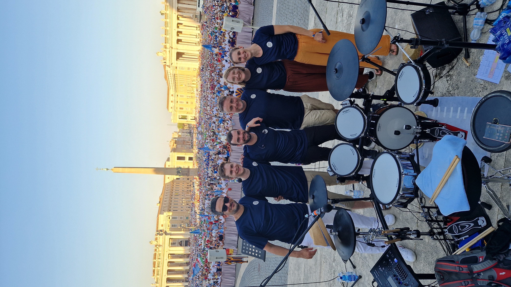
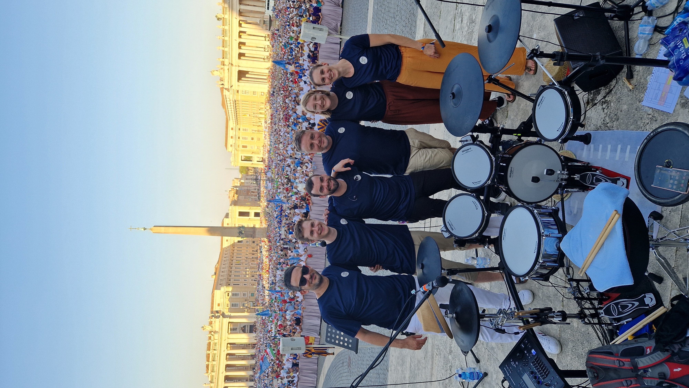

Aus dem Bistum Limburg stammend steht Syndikath stilistisch für christliche Popmusik, kann aber auch - egal ob NGL oder Lobpreis - anders. Markenzeichen ist der mehrstimmige Gesang, der von Violine oder Saxophon umrundet, sich auf dem Fundament der Rhythmusgruppe bewegt. Neben Covern stehen bei Syndikath eigene Titel auf dem Programm.
Aktuelle Besetzung:
| Clara Vogel | Gesang |
| Sarah Krebs | Gesang, Geige, Saxophon |
| Johannes Walter | Gesang, Klavier, Synthesizer |
| André Vaccaro | Gitarre |
| Thomas Klima | Bass |
| Hendrik Lieser | Gesang, Schlagzeug |
Kontakt:
 
